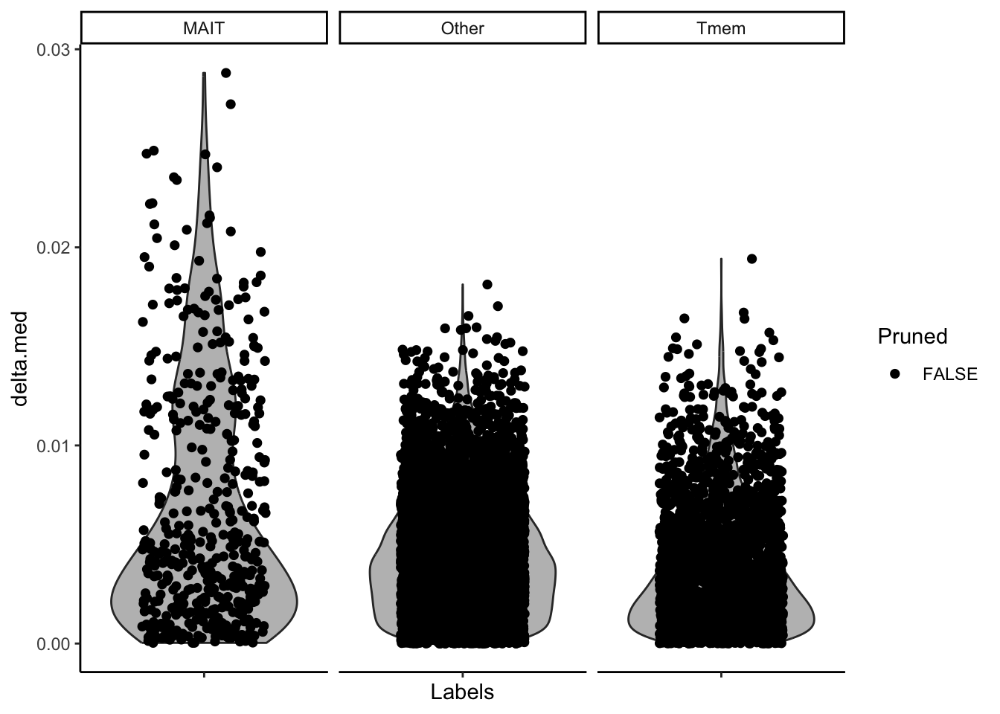

Code
library(SingleCellExperiment)
library(SummarizedExperiment)
library(SingleR)
library(Seurat)
library(pheatmap)
library(ggplot2)
library(RColorBrewer)
library(tidyverse)
library(scater)
library(uwot)
library(celldex)This is a Quarto document which nicely combines both R code, its results and text explanation to enable an easy and interactive access for both learners, readers and supervisors to such analyses. To learn more about Quarto see https://quarto.org. By default all code lines are blended, but you can show them by clicking on the code button.
In previous analyses we prepared our datasets in terms of data normalization and UMAP projection. We also tried a simple case of MAIT cell annotation taking well-annotated Garner et al. dataset as a query and MonacoImmuneData database as reference.
Here we take preprocessed data: both Lett experiment (blood cell subset) and Garner et al. dataset preprocessed and filtered (for blood tissue and experiment 2). And we try to:
1) Project MonacoImmuneData MAIT cell labels on Lett dataset;
2) Project Garner et al. dataset MAIT cell label on Lett dataset
In this way we want to be sure that if one of the methods shows some result - it is not due to the batch effect and other types of artefacts, or at least, it is not completely biased towards batch effect or whatever else - donor variability etc.
Also, we want to make exact counts of MAIT cells in Lett dataset.
We start with loading data
library(SingleCellExperiment)
library(SummarizedExperiment)
library(SingleR)
library(Seurat)
library(pheatmap)
library(ggplot2)
library(RColorBrewer)
library(tidyverse)
library(scater)
library(uwot)
library(celldex)lett.sce <- readRDS("./../input/Lett.sce.blood.gene.symbol_analyzed.rds")
lett.sceclass: SingleCellExperiment
dim: 36169 8365
metadata(3): Samples Samples Samples
assays(5): counts genefull spliced unspliced logcounts
rownames(36169): PLCXD1 LINC00685 ... '' ''
rowData names(12): GENEID SYMBOL ... max_prop_ambient topHVG
colnames(8365): BSSE_QGF_176994-AAACCCAAGATGAATC
BSSE_QGF_176994-AAACCCAAGGAGCTGT ... BSSE_QGF_176994-TTTGTTGGTTCTTGCC
BSSE_QGF_176994-TTTGTTGTCGTGGAAG
colData names(23): Barcode SampleName ... label MonImmCell
reducedDimNames(7): PCA TSNE ... UMAP UMAP.2
mainExpName: RNA
altExpNames(0):lett.sce$cellReferences_celldex_MonacoImmuneData <- lett.sce@colData@listData[["cellReferences_celldex_MonacoImmuneData"]]@listData[["labels"]]
plotUMAP(lett.sce, colour_by = 'cellReferences_celldex_MonacoImmuneData',point_size = 1.0)This UMAP was loaded into the Lett dataset by R. Ivanek and it shows very general immune cell types like T cells, NK cells, B cells. We see that our cells are mainly composed of these types in mentioned order…
Extract count matrix from sce object for query data and load reference
query <- assay(lett.sce)
ref <- celldex::MonacoImmuneData()pred <- SingleR(test = query, ref = ref, labels = ref$label.fine)
pred.Tcell <- SingleR(test = query, ref = ref, labels = ref$label.main)pred$scores[7:9,7:9] Low-density basophils Low-density neutrophils MAIT cells
[1,] 0.1929253 0.1821794 0.3575172
[2,] 0.1470251 0.1414905 0.2950138
[3,] 0.1383138 0.1303763 0.3098028Just scores for each cell type
plotScoreHeatmap(pred)Now these scores are plotted on heatmap and we see a small MAIT portion annotated
plotDeltaDistribution(pred)This complex graph shows the rate of false-positives. Nothing important to mention so far.
UMAP plot showing all 29 fine cell types including MAIT projected on our dataset. Unfortunately the legend is so small that we can not clearly see how MAITs are designated
lett.sce$singleR.labels.fine <- pred$labels[match(rownames(lett.sce@colData),
rownames(pred))]
plotUMAP(lett.sce, colour_by = 'singleR.labels.fine',
point_size = 1.0)That is why we will produce additional plots below.
tab <- table(Assigned=pred$labels, Clusters=lett.sce$cellReferences_celldex_MonacoImmuneData)
pheatmap(log10(tab+10), color = colorRampPalette(c('white','blue'))(10))This is another “heatmap” showing the relation of MonacoImmuneData main clusters already contained in the analysis (done by R. Ivanek) and the newly projected detailed labels. We can see that MAIT cells land somewhere within T cell cluster together with many other T cell subtypes
We use ifelse function to create a new label with only MAIT cells and “others” and plot we plot it
cell_type_of_interest <- "MAIT cells"
MAIT_cells <- ifelse(lett.sce@colData@listData[["singleR.labels.fine"]] == "MAIT cells", "MAIT cells", "All other")
colData(lett.sce)$MAIT_cells <- factor(MAIT_cells)
colors <- c("MAIT cells" = "red", "All other" = "lightgrey")
p <- plotReducedDim(lett.sce, "UMAP", colour_by = "MAIT_cells", point_size = 1) + scale_colour_manual(values = colors)Scale for colour is already present.
Adding another scale for colour, which will replace the existing scale.print(p)So we see our MAIT cells very nicely among others.
This is achieved by next quite complex code section.
# Let's count MAIT cells and Other cells
MAIT_cell_values <- colData(lett.sce)$MAIT_cells
value_counts <- table(MAIT_cell_values)
# now let's annotate all T cells
lett.sce$singleR.labels.main <- pred.Tcell$labels[match(rownames(lett.sce@colData),
rownames(pred.Tcell))]
# Filtering out only "T cells"
t_cell_values <- lett.sce$singleR.labels.main
is_t_cell <- t_cell_values == "T cells"
is_t_cell2 <- t_cell_values == "CD4+ T cells"
is_t_cell3 <- t_cell_values == "CD8+ T cells"
t_cell_counts <- sum(is_t_cell) + sum(is_t_cell2) + sum(is_t_cell3) # Count the number of "T cells"
percent1 <- round((value_counts[2] /t_cell_counts * 100),1)
message("Number of MAIT cells equals ", value_counts[2])Number of MAIT cells equals 188message("Number of all T cells equals ", t_cell_counts)Number of all T cells equals 4333message("Persentage of MAIT cells out of all T cells found with this method of annotation equals ", percent1)Persentage of MAIT cells out of all T cells found with this method of annotation equals 4.3Let’s load the new reference data (blood subset) which we saved from previous Seurat analysis
ref2 = readRDS("./../output/Garner.seurat.2exp.blood.mait_analyzed.rds")This command would be needed to convert reference from Seurat to SCE, but we can avoid it
#sceasy::convertFormat(Gar.sce,
# from = "seurat", to = "sce",
# outFile = "Gar_sce.rds")
# Gar_sce is garner.blood.withTrm converted into sce
# Gar.sce <- readRDS("Gar_sce.rds")
# Gar.sceref2.counts <- GetAssayData(ref2, layer = "data")
common_genes <- intersect(rownames(lett.sce), rownames(ref2))
length(common_genes)[1] 15243# Subset lett.sce to include only common genes
lett.sce <- lett.sce[common_genes, ]
ref2 <- ref2[common_genes, ]
ref2An object of class Seurat
15243 features across 40973 samples within 1 assay
Active assay: RNA (15243 features, 1725 variable features)
3 layers present: counts, data, scale.data
2 dimensional reductions calculated: pca, umapquery <- assay(lett.sce)cell_metadata <- ref2$cell_type
metadata_df <- DataFrame(cell_type = cell_metadata)
ref_se_object <- SummarizedExperiment(assays = ref2.counts,
colData = cell_metadata)
ref_se_object$cell_type <- ref_se_object$X
ref_se_object@assays@data@listData[["logcounts"]] <- ref_se_object@assays@data@listData[[1]]
ref_se_objectclass: SummarizedExperiment
dim: 19289 40973
metadata(0):
assays(2): '' logcounts
rownames(19289): AL627309.1 FAM87B ... AC233755.1 AC240274.1
rowData names(0):
colnames(40973): 1_AAACCTGAGCAGCGTA 1_AAACCTGCATTCTCAT ...
8_TTTGTCAAGTCGAGTG 8_TTTGTCACATATACCG
colData names(2): X cell_typepred2 <- SingleR(test = query, ref = ref_se_object, labels = ref_se_object$cell_type)We see here that MAIT are annotated with very high score, and there is minimal similarity between Tmem and MAIT in our dataset. But “Other” cells have significant similarity with both MAIT and Tmem
plotScoreHeatmap(pred2)There seems to be no false positives
plotDeltaDistribution(pred2)
It looks simple. We see MAIT likely in the same position as in previous projection model, but they seem to be a little bit less now
lett.sce$label.Garner <- pred2$labels[match(rownames(lett.sce@colData), rownames(pred2))]
plotUMAP(lett.sce, colour_by = 'label.Garner',point_size = 1.0)We use ifelse function to create new labels with only MAIT label and “others”
#cell_type_of_interest <- "MAIT cells"
MAIT_cells <- ifelse(lett.sce@colData@listData[["label.Garner"]] == "MAIT", "MAIT", "All other")
colData(lett.sce)$MAIT_cells_Garner <- factor(MAIT_cells)
colors <- c("MAIT" = "red", "All other" = "lightgrey")
p2 <- plotReducedDim(lett.sce, "UMAP", colour_by = "MAIT_cells_Garner", point_size = 1) + scale_colour_manual(values = colors)Scale for colour is already present.
Adding another scale for colour, which will replace the existing scale.print(p2)MAIT_cell_values2 <- colData(lett.sce)$MAIT_cells_Garner
value_counts2 <- table(MAIT_cell_values2)
percent2 <- round((value_counts2[2] /t_cell_counts * 100),1)
message("Number of MAIT cells equals ", value_counts2[2])Number of MAIT cells equals 475message("Number of all T cells equals ", t_cell_counts)Number of all T cells equals 4333message("Persentage of MAIT cells out of all T cells found with this method of annotation equals ", percent2)Persentage of MAIT cells out of all T cells found with this method of annotation equals 11It seems that we identified the position of our MAIT cells correctly, since two independent dataset projections make very similar spatial result. Using Garner dataset we get significantly more cells identified as MAIT. This is a little bit unexpected ( I would expect similar amounts identified by both methods), because I assume MonacoImmuneData dataset uses also blood MAIT cells for extracting labels ( I could not find more specific information about this reference dataset).